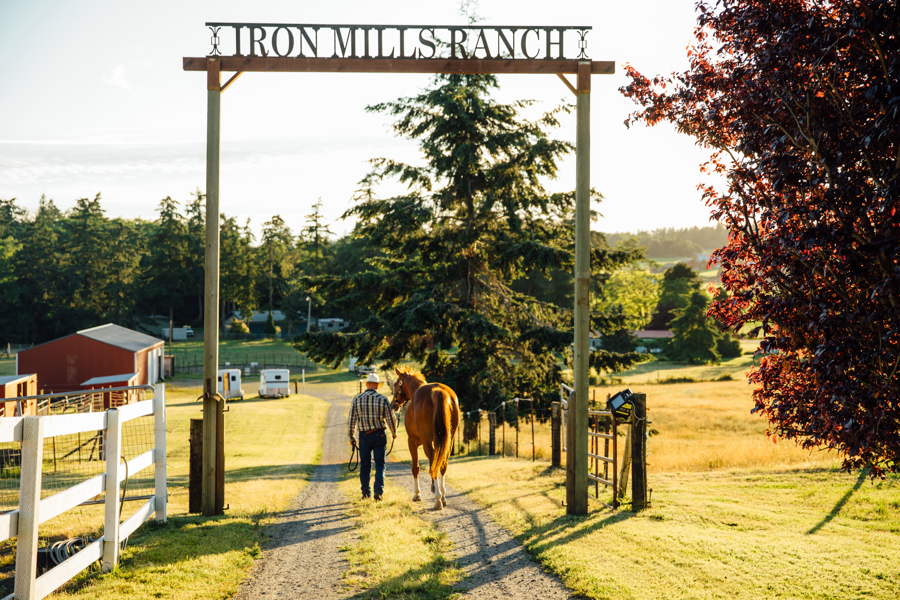

Welcome to Iron Mills Ranch! We are a 20 acre family run boarding facility located in Coupeville WA. The facility takes care of feeding twice a day as well as daily care. We have a 130 x 70 arena and round pen for working your horse as well as miles of riding trails within a half mile of the boarding facility. We offer group and individual outdoor shelter options, as well as plenty of grassy pasture space. For an additional fee, trailer parking is available upon request. For more information please reach out, we look forward to hearing from you!